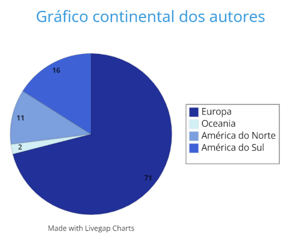
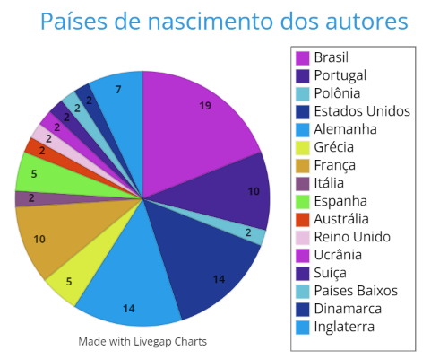
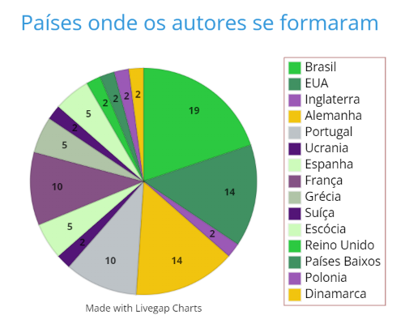

Mapa em relação aos continentes dos autores estudados
GRÁFICOS
Média dos continentes em que os autores nasceram:

Média dos países em que os autores nasceram:

Média dos países em que os autores se formaram:

Henry Odera Oruka:
O autor Henry Odera Oruka era um filósofo Sul-Africano que teve grande importância por estudar sobre o neocolonialismo implantado principalmente em seu país, o Quênia. Nascido em Nyanza no Quênia, passou parte da vida vivendo em sua cidade natal, logo depois conseguindo ingressar em uma universidade na Suécia, onde estudou muito ciências humanas, principalmente filosofia. Construiu um projeto de estudo chamado Sage Phylosophy, que consistia em entrevistar pessoas sábias e com senso crítico do seu país para depois prosseguir com seu estudo acerca de filosofias que existiam na época, como o colonialismo, crenças cristãs, hegemonia, etc. Por mais complexo que seu projeto fosse, Oruka continuou estudando estes conceitos visando concretizar ideias de um mundo mais justo, igualitário, ecológico e emancipador.
Um tempo após terminar seu primeiro projeto, Henry Oruka começou a fazer pesquisas intervencionistas na sociedade, indo contra o regime de Daniel Arap Moi e esclareceu isso publicamente. Começou a publicar seus primeiros livros com um tema de filosofia aplicada, uma filosofia ético-política, onde ele desconstruía as ideias não só colonialistas quanto as ideias de um mundo em que a justiça foi precarizada pouco a pouco durante as eras. Muito se foi mudado os lugares por onde Oruka passou, levando suas ideias de um mundo melhor e desmistificando estas ideias que foram impostas pelos colonizadores no seu povo.
Henry Oruka não teve tanta repercussão em uma escala mundial por ser um autor do continente africano, um continente precarizado e caracterizado pelo resto do mundo por disputas territoriais, guerras políticas, fome e pobreza. Por mais que seus ideais sejam revolucionários e de grande importância para o cenário atual do mundo, o interesse das pessoas quererem publicar, compartilhar e pesquisar mais sobre suas ideias não é existente. Talvez por não saberem da existência de tal autor ou não terem interesse por ser algo que não vá chamar muita atenção em relação a outras pesquisas. Infelizmente os holofotes estão virados para o mundo ocidental (norte) e europeu, ideias, filosofias, pesquisas e novas formas de pensar e agir que não sejam dessas regiões acabam não tendo o mesmo impacto como as dessas regiões do planeta.
Para explicar melhor isso, vamos falar sobre “Eurocentrismo”. Esse conceito fala sobre a Europa ser o exemplo a ser seguido pelos outros países do mundo em questões culturais, políticas e sociais. Como inúmeros países da América e da África, por exemplo, foram colonizados por alguma potência europeia do passado, fora implantado os costumes, crenças e cultura dos países colonizadores neles. Todos os outros modos de vida, religiões e culturas muitos diferentes das desse modelo mundial, acabam sendo abafadas e mal-vistas entre os países modelos e os que seguem eles. Não é à toa que quando vemos certas práticas e/ou costumes dos países orientais pensamos que eles são estranhos, errados ou até mesmo infratores dos direitos humanos. Por conta desse efeito, existe muito ódio espalhado pela internet por pessoas que não concordam com hábitos de outras pessoas, assim criando conflitos que levam as vezes até mesmo à morte. Não só culturas diferentes, mas também religião, cor de pele, sexualidade, e por aí vai. Temos que ter consciência de que as pessoas não escolhem nascer com tais verdades, tal cor de pele, tal país, entre outras escolhas, temos que aceitar que existem sim pessoas diferentes que nós, seja em questão de pensamentos ou em outros aspectos e devemos respeitar todos. De pouco em pouco conseguiremos mudar este pensamento geral e diminuir o ódio entre as pessoas de uma forma pacífica e não com mais violência.